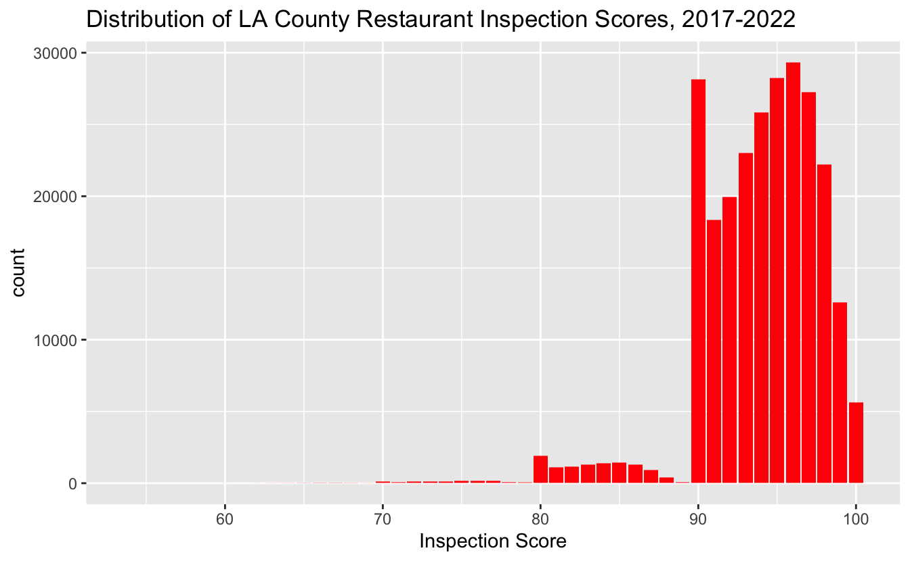

This is my PM566 Final Project website.
Los Angeles County provides openly available data on all restaurant and market inspections over the past 5 years. Facilities are subject to inspection 1 to 3 times a year, and made public within 1 week of inspection date. The frequency in which restaurants and food markets are inspected depends on the public health risk associated with the food products served or prepared and on the facility’s history of inspection grades. Inspectors deduct points based on violations and health risks, which is turned into a score out of 100. In addition, Los Angeles County data from 2018 on population health is publicly available. Demographic data, such as age and race distribution, socioeconomic data, such as proportion receiving EBT and proportion employed, and health outcomes data, such as proportion with asthma and rates of suicide, are provided for 87 cities within Los Angeles County.
I am interested in exploring restaurant inspection ratings in LA County. I have a few questions, with the main one being: Are restaurant inspection ratings associated with community health status? Secondary questions include: What are the “safest” and most “dangerous” cities in LA County for eating restaurant food? What restaurant chain is the “safest” to eat at? What restaurant chains should one proceed with caution?
I used 2 data sets which I merged together for this project. Both are available at data.lacounty.gov to download as CSV (I have also uploaded these datasets to my github repository). The first is a dataset of all LA County restaurant inspections. I added LA County city health data to see if there were any relationships between public health outcomes and local restaurant hygiene. These datasets were merged by city name, and no restaurant was missing its city in the first dataset. City names were briefly inspected to ensure matching would be feasible. As Los Angeles had many sub-cities for which there was health data, I only included the “City of Los Angeles” data to represent the local public health for any restaurant with city listed as Los Angeles. Only restaurants in cities with health data were included in this analysis.
Data were explored utilizing R package ggplot2 to create a histogram of scores. Implausibly low scores were deleted (score less than 50, of which there was 1 value with score 3). Average scores within cities were computed and compared. Restaurant chains were identified through tokenizing words as bigrams, and looking to see most common chain restaurants. The following set of 9 chains were selected: McDonald’s, Jack in the Box, Starbucks, El Pollo Loco, Panda Express, Taco Bell, Del Taco, In N Out, Panera Bread. Average chain inspection scores were computed and compared. Measures of public health were selected: proportion with depression, proportion with obesity, proportion with diabetes.
To observe the relationship between restaurant rating and community health status, only chain restaurants were analyzed (due to sample size). Chain restaurant addresses were geocoded using tidygeocoder and OpenStreetMaps in order to map latitudes and longitudes on the plots. This method does not require an API key!
## Source: local data table [475,719 x 102]
## Call: `_DT4`[!`_DT5`, on = .(word)]
##
## FACILITY_CITY ACTIVI…¹ OWNER…² OWNER…³ FACIL…⁴ RECOR…⁵ PROGR…⁶ PROGR…⁷ PROGR…⁸
## <chr> <chr> <chr> <chr> <chr> <chr> <chr> <chr> <int>
## 1 ALHAMBRA 2021/10… OW0269… SKATE … FA0280… PR0235… SKATES… ACTIVE 1634
## 2 ALHAMBRA 2018/05… OW0031… SANCHE… FA0006… PR0037… BUN N … ACTIVE 1638
## 3 ALHAMBRA 2018/05… OW0031… SANCHE… FA0006… PR0037… BUN N … ACTIVE 1638
## 4 ALHAMBRA 2021/07… OW0033… STARBU… FA0048… PR0005… STARBU… ACTIVE 1633
## 5 ALHAMBRA 2021/07… OW0033… STARBU… FA0048… PR0005… STARBU… ACTIVE 1633
## 6 ALHAMBRA 2019/05… OW0185… SAN TU… FA0179… PR0173… RICK'S… ACTIVE 1638
## # … with 475,713 more rows, 93 more variables: PE_DESCRIPTION <chr>,
## # FACILITY_ADDRESS <chr>, FACILITY_STATE <chr>, FACILITY_ZIP <int>,
## # SERVICE_CODE <int>, SERVICE_DESCRIPTION <chr>, SCORE <int>,
## # SERIAL_NUMBER <chr>, EMPLOYEE_ID <chr>, ObjectId.x <int>, Pop_Tot <int>,
## # Prop_18y <dbl>, Prop_64y <dbl>, Prop_65y_ <dbl>, Prop_Blk <dbl>,
## # Prop_Lat <dbl>, Prop_Whi <dbl>, Prop_Asi <dbl>, Prop_Ami <dbl>,
## # Prop_NHO <dbl>, Prop_FPL1 <dbl>, Prop_FPL2 <dbl>, Prop_forb <dbl>, …
##
## # Use as.data.table()/as.data.frame()/as_tibble() to access resultsIn total, there were 252773 inspections of 39423 restaurants in 66 cities within LA County.
Of the 252773 inspections included in the analysis, the average grade was 93.9351117 with a standard deviation of 3.8669866. The highest score was a perfect score, 100 whereas the lowest score was 54. Interestingly, there appears to be a peak at 90, which corresponds to the lowest possible score to achieve an A rating. This may hint at bias involved in the inspection grading process.
scorehisto
citysum %>% arrange(desc(mean_score)) %>% slice(1:5) %>% knitr::kable(col.names = c("City", "Average Score", "Standard Deviation of Score", "Number of Inspections in City", "Proportion Diabetes", "Proportion Obesity", "Proportion Depression"), caption = "Top 5 Cities")| City | Average Score | Standard Deviation of Score | Number of Inspections in City | Proportion Diabetes | Proportion Obesity | Proportion Depression |
|---|---|---|---|---|---|---|
| LONG BEACH | 97.37500 | 0.7440238 | 2 | 0.1167 | 0.2422 | 0.0884 |
| CALABASAS | 96.03195 | 2.9069571 | 127 | NA | 0.1094 | 0.1412 |
| SANTA CLARITA | 95.74072 | 3.2719696 | 402 | 0.0880 | 0.2528 | 0.1126 |
| MAYWOOD | 95.60426 | 3.4357203 | 156 | 0.0929 | 0.2925 | 0.0720 |
| EAST LOS ANGELES | 95.49254 | 3.4039778 | 12 | 0.0934 | 0.2778 | 0.0764 |
citysum %>% arrange(mean_score) %>% slice(1:5) %>% knitr::kable(col.names = c("City", "Average Score", "Standard Deviation of Score", "Number of Inspections in City", "Proportion Diabetes", "Proportion Obesity", "Proportion Depression"), caption = "Bottom 5 Cities")| City | Average Score | Standard Deviation of Score | Number of Inspections in City | Proportion Diabetes | Proportion Obesity | Proportion Depression |
|---|---|---|---|---|---|---|
| MONTEREY PARK | 91.63380 | 5.506981 | 467 | 0.1222 | 0.1058 | 0.0442 |
| ROWLAND HEIGHTS | 91.68030 | 4.965620 | 429 | 0.1049 | 0.1848 | 0.0422 |
| ALHAMBRA | 92.36034 | 4.893888 | 477 | 0.1040 | 0.1358 | 0.0523 |
| GARDENA | 92.36540 | 4.176667 | 685 | 0.0991 | 0.2770 | 0.0584 |
| CERRITOS | 92.59487 | 4.416418 | 344 | 0.0948 | 0.2342 | 0.0410 |
Copyright © 2022. Victoria Yin.